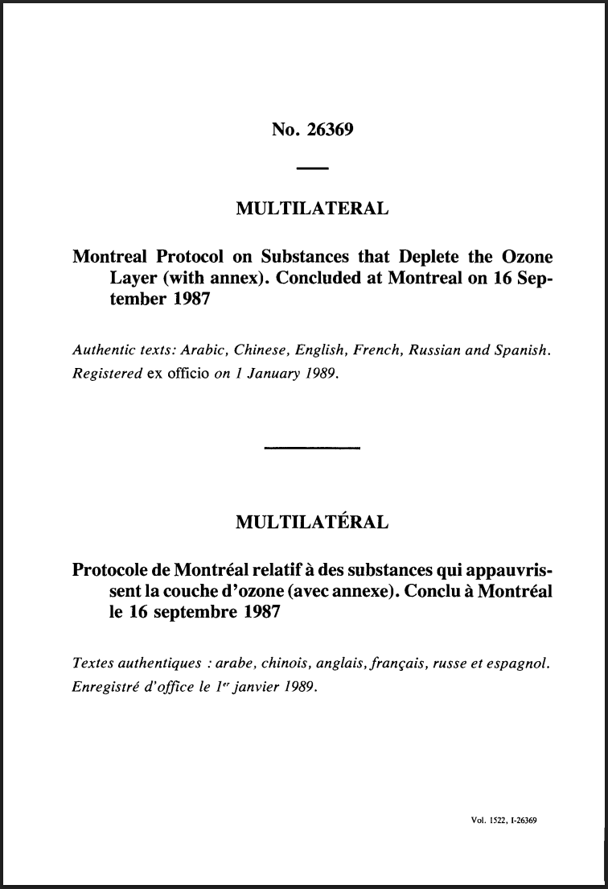
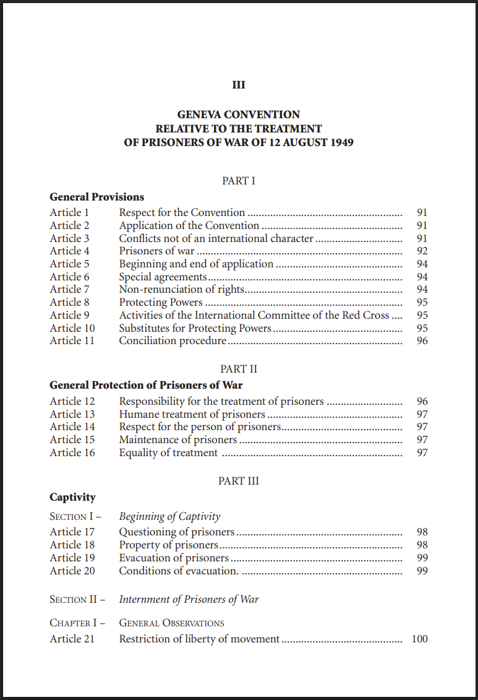
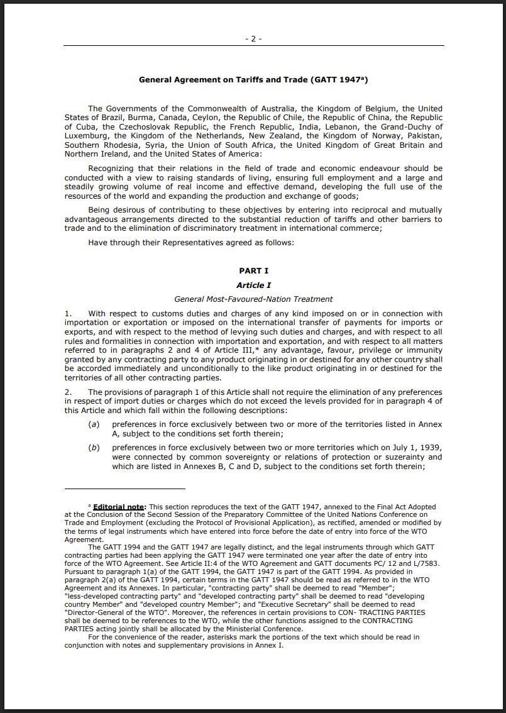
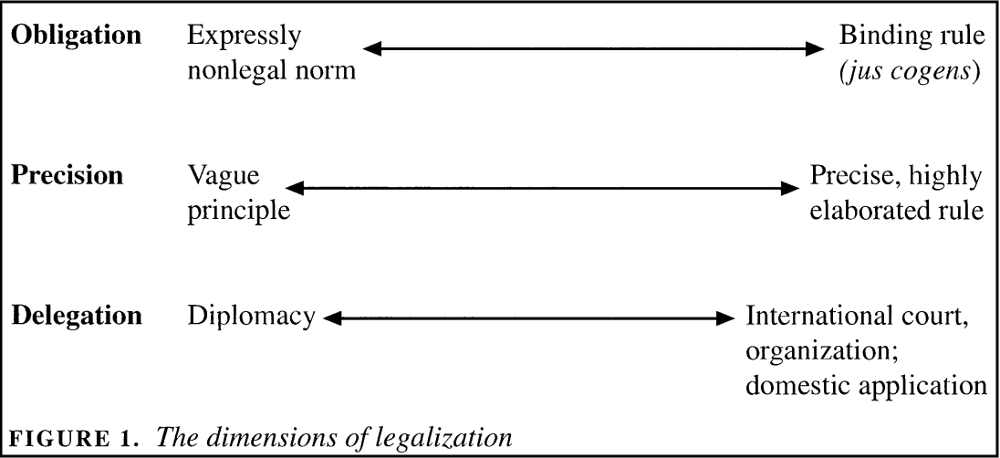
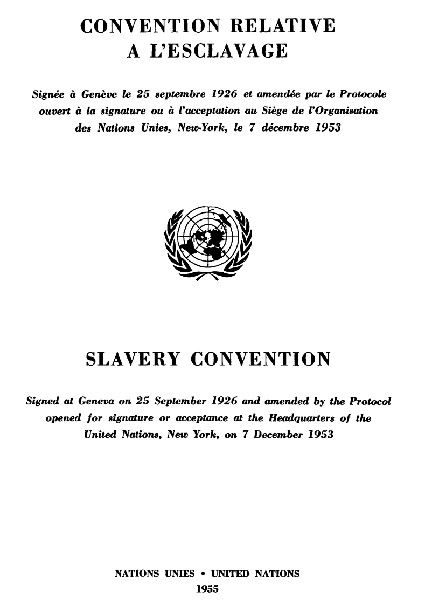
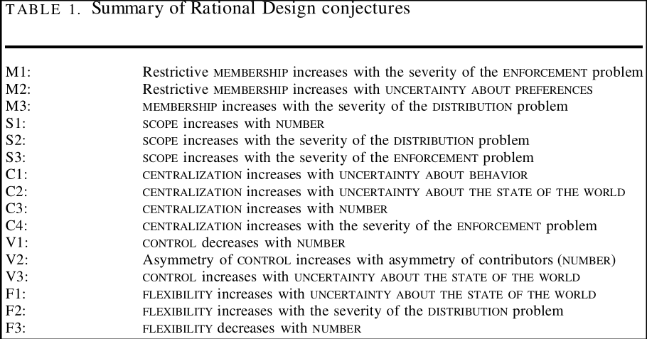

Section 1: Analyzing International Institutions
Justin Leinaweaver (Fall 2026)



Applying Legalization to International Institutions


Applying Rational Design to International Institutions
Membership rules
Scope of issues
Centralization of tasks
Rules for control
Flexibility of arrangements
Analyzing International Institutions
Legalization
Rational Design
Membership rules
Scope of issues
Centralization of tasks
Rules for control
Flexibility of arrangements
Design Choices
Membership rules
Scope of issues
Centralization of tasks
Rules for control
Flexibility of arrangements
Baseline Assumptions
Rational design
Shadow of the future
Transaction costs
Risk aversion
Six broad problems that complicate efforts to achieve international cooperation
Enforcement
Uncertainty about preferences
Uncertainty about behavior
Uncertainty about the state of the world
Number
Distribution

In order to address…
The enforcement problem: Restrict membership, increase scope and/or centralize tasks
Uncertainty about preferences: Restrict membership
Uncertainty about behavior: Centralize tasks
Uncertainty about the state of the world: Centralize tasks, increase state control and/or add flexibility
The number problem: Increase scope, centralize tasks, decrease state control, decrease flexibility and/or increase asymmetric control
A distribution problem: Increase membership, increase scope, and/or increase flexibility
Choose a problem currently facing the international community that you would like to see addressed using an international institution